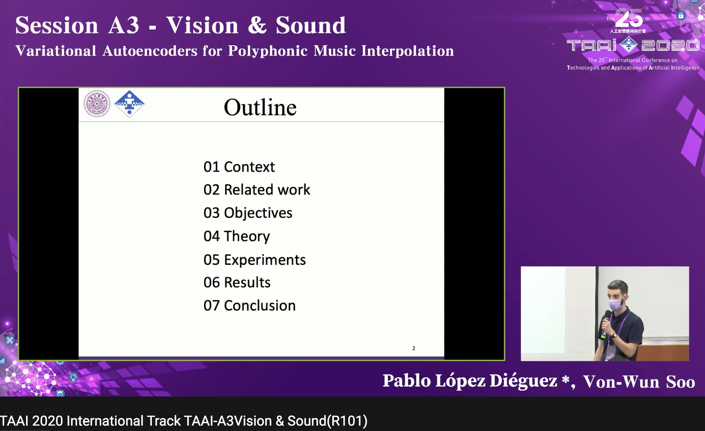
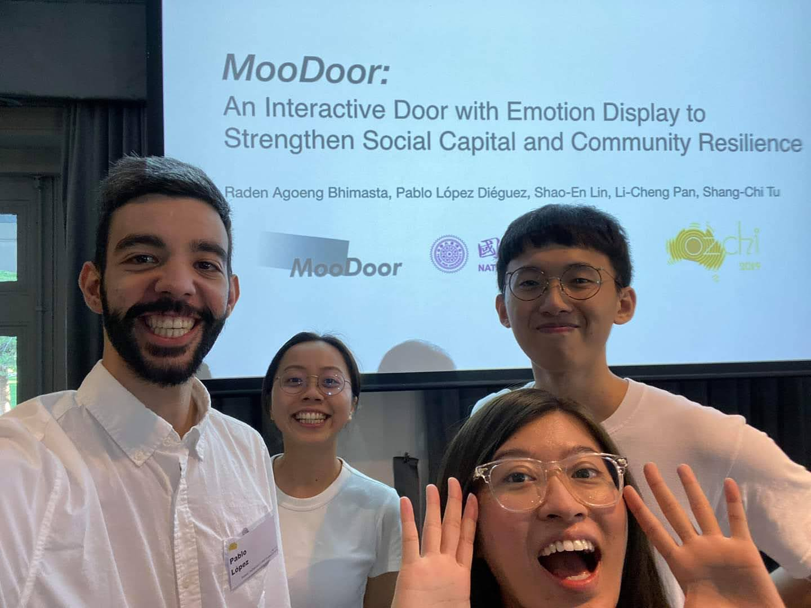

Talks and Conferences
Although my experiences giving talks at Conferences and Tech events are limited, I like sharing my knowledge and learning from others' points of view. This page is a record of my past sharings, which I hope can grow bigger every year.
[2021]
Evolving Neural Networks
@Titansoft's Tech Days: Evolutionary Architectures for the Next Decade
The democratization of AI and, in particular, neural networks, have led to huge speculations on an AI-led future. One of these speculation points revolves around AutoML (automated Machine Learning), which theoretically challenges the need of experts to apply ML techniques, but in reality focuses on the automation of certain tasks, such as finding the best neural network architecture for a given problem. This particular task is addressed by NAS (Neural Architecture Search), which is presented as one of AutoML's most realistic approaches.
 During online presentation at Tech Days 2021 (please forgive my face)
During online presentation at Tech Days 2021 (please forgive my face)
[2020]
Variational Autoencoders for Polyphonic Music Interpolation
@TAAI 2020: International Conference on Technologies and Applications of Artificial Intelligence
Check the paper out at IEEE Xplore
 Live presentation at TAAI 2020
[2019]
MooDoor: An Interactive Door with Emotion Display to Strengthen Social Capital and Community Resilience
@OzCHI'19: Australian Conference on Human-Computer-Interaction
In this paper we proposed MooDoor, an interactive door that promotes neighborhood bonding in the context of a local community and smart city. MooDoor is presented in two modes: mood mode and alert mode. (1) Mood mode aims to strengthen the bonding between neighbors in everyday life by letting user display their frame of mind onto MooDoor. To do so, MooDoor is equipped with a digital display that shows the user's emotions using patterns, colors, icons and emojis. (2) Alert mode is triggered whenever a natural disaster happens and aims to ensure an individual's safety, exchange information with the authorities and coordinate recovery activities. Our work contributes by proposing a novel smart city technology that explores the design spaces of a house.